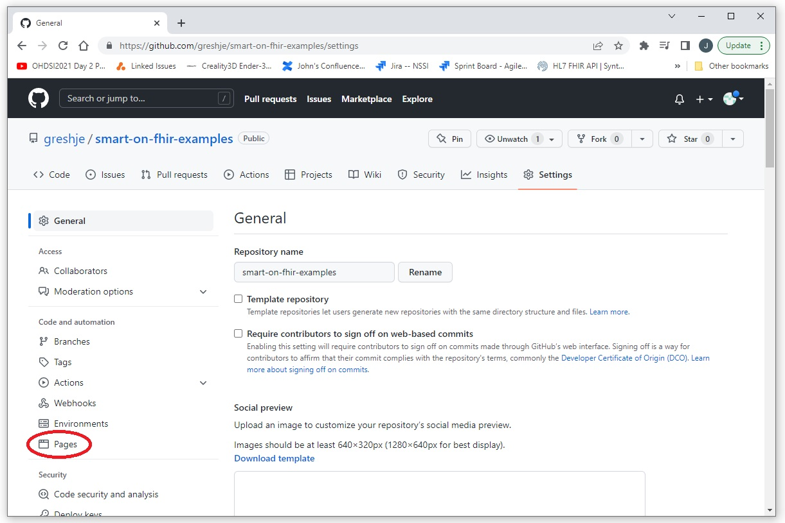

This document will walk through the process of adding html documents to a github repository like this on.
Clone and checkout your project locally so you can easily add files and edit the project.
We will be hosting our documentation from the repository that it documents.
Github supports publishing html documentation from a docs folder.
We will be using the added docs folder as a home for our documentation.
For this example we will just be adding an index.html page.
From your repository's homepage select "Settings"
Select "Pages"

Select the branch and folder that will be the root directory for the documentation, then select save.
Note: It can take upto 10 minutes for the documentation to be propegated through the system.
Note (copy) the url that is displayed.
From your repository's homepage, select the gear icon next to the About section header.
Paste the url from the previous step into the url box.
A link to your documentation will now appear in the About section.